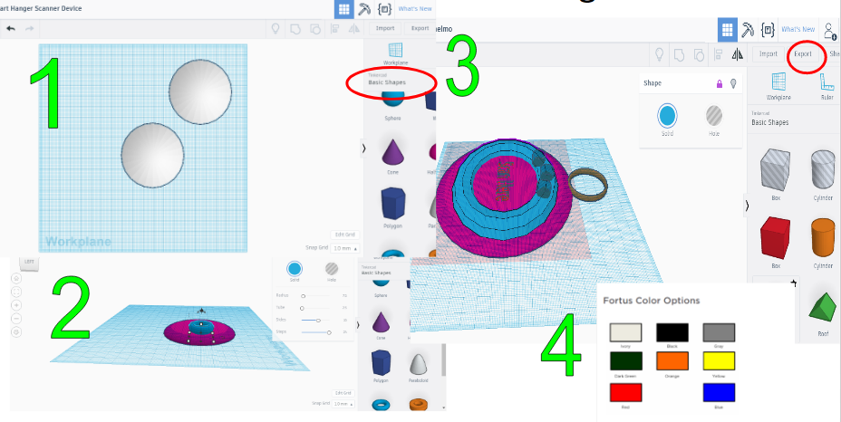
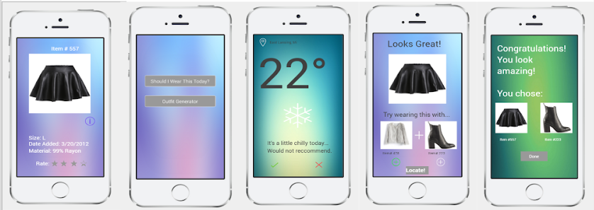

How to quickly and efficiently be prepared in the morning with the proper attire in such a way that users could explore the full extent of their closet.
Common Themes of User Interviews:
Instant gratification - in terms of the fact that we often seek our own opinion on outfits while out shopping and if it looks good to us we don’t want to wait around for opinions, too inconvenient i.e. especially while in a rush
Outfit items/choices are commonly hidden & limited the way our closets are built (most of the people we interviewed don’t have walk-in closets)
Time constraints - different times and days of the week often prevent people from picking out exactly what they needed or wanted to wear
Comfort over style - some people prioritize what they wear on how comfortable they are in it rather than how it looks on them!
Interview protocol in fullUser Story
As a working class professional, I want to minimize the amount of focus speant on clothing choices in the morning so that I can better focus on the more important tasks at hand
Final Ideation
Finalized designProduction cycle
For the lighting system, it was designed to fulfil 2 purposes, to give information to the user, and to be part of an organizational system.

Using common knowledge of the traffic light color symbolism, we wanted to tie the evaluation of the item down to 3 states, green for clean to wear, yellow for questionability, and red for needing wash. This would allow users to be able to, from a glance, be able to determine what options were viable.
The interface which would house all the parts on the hanger was designed and 3d printed
The most interactive part of our design was a companion mobile app
Conclusion
We would actually change the shape of the hanger device completely. Instead of our original circular, “collar-like” approach for how the prototype would sit on the hanger, the new revision would be more of a cylinder or rectangular structure, and the device would be significantly smaller. In doing so, this new future revision would give the device a more natural and subtle look on the hanger.
Our technology was not designed to change and dictate the user’s life, but rather enhance their lifestyle and enable them to live a more fulfilled experience. By keeping our design philosophy in line with user needs and by limited interaction, we accomplished our design goals and created a product that investors were innterested in.
Backup files